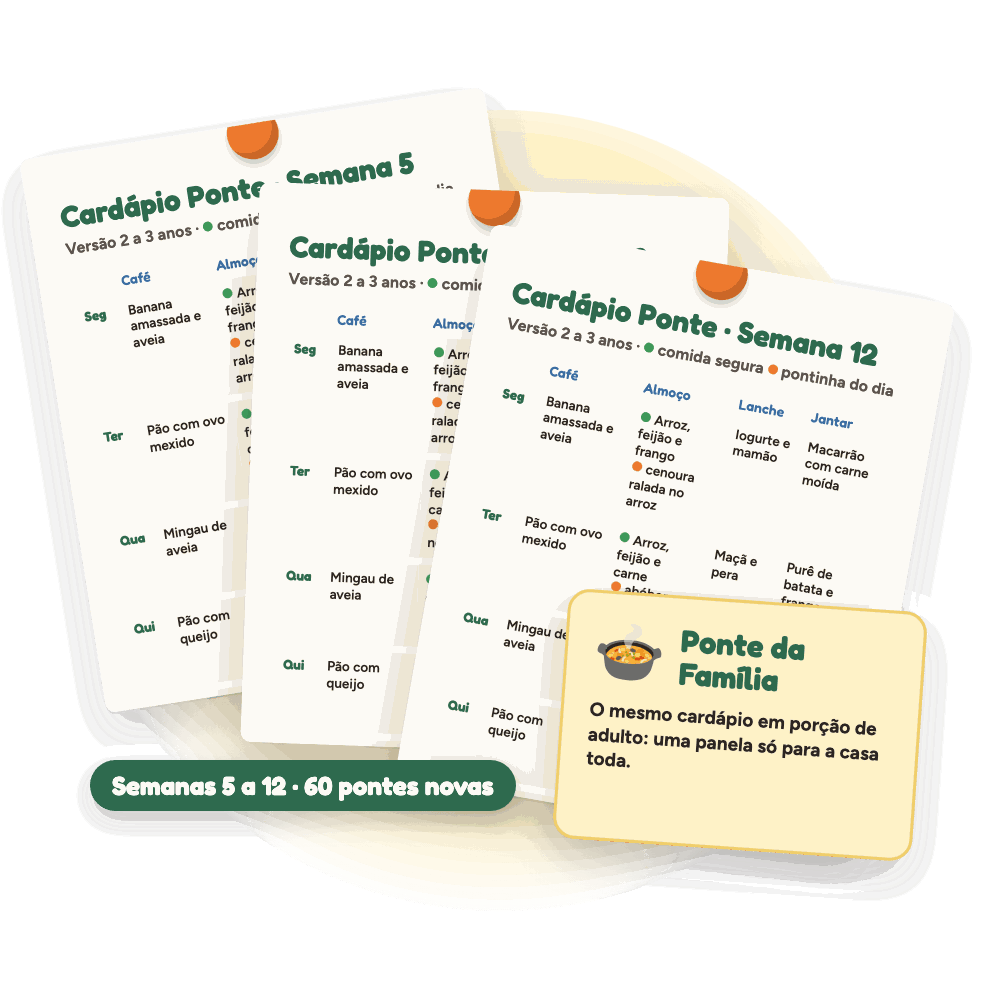

Falta um passo seu Prato Ponte já está garantido
O Prato Ponte vai até a semana 4. O Prato Ponte 3 Meses continua até a semana 12.
Mais 8 semanas de cardápio, 60 pontes novas, a lista de compras de cada semana e a Ponte da Família: uma panela só para a casa toda.

Prato Ponte 3 Meses
PDF de 36 páginas (cardápio, listas e diário para imprimir) e as aulas na mesma área de membros do Prato Ponte.
- Cardápio pronto até a semana 12. Mais 8 semanas (dias 29 a 84) de café da manhã, almoço, lanche e jantar, com a comida segura 🟢 e a pontinha 🟠 marcadas em cada refeição. Você não precisa inventar o que fazer quando a semana 4 acabar.
- 20 alimentos novos, com 3 pontes para cada um. Beterraba, couve-flor, vagem, mandioquinha, ervilha, milho, espinafre, lentilha, batata-doce, pepino, repolho, grão-de-bico, pimentão, inhame, berinjela, mamão, manga, goiaba, abacate e tangerina. Cada ponte sai de uma comida que a criança já come e traz o corte seguro para 2 a 3 anos.
- A lista do mercado pronta, toda semana. 8 listas separadas por seção (hortifrúti, açougue, ovos e laticínios, mercearia), pensadas para uma família de 3 a 4 pessoas, e o que adiantar no fim de semana para cozinhar menos nos dias corridos.
- Uma panela só para a casa toda. A Ponte da Família mostra como servir a mesma comida montada para o adulto e desmontada para a criança, com o tempero forte separado. Você para de cozinhar duas comidas.
- Mais repetição, sem pressa. Cada pontinha volta 4 ou 5 vezes na semana, de jeitos diferentes; a semana 12 traz o repeteco das que mais avançaram no seu diário. Inclui o Diário das pontes das semanas 5 a 12 para imprimir.
Para quem é
Para a mãe (ou o pai) de criança de 2 a 6 anos que vai começar o Prato Ponte hoje e quer o cardápio dos próximos 3 meses já pronto. Para quem cozinha para a família inteira e está cansada de fazer uma comida para os adultos e outra para a criança.
Para quem não é
Não é dieta, prescrição individual nem tratamento, e não traz quantidade por criança. Se a criança tem alergia, autismo, dificuldade para engolir ou está perdendo peso, o caminho é o pediatra e um nutricionista.
Por que agora
O Prato Ponte que você acabou de levar cobre 4 semanas, e o 3 Meses começa exatamente no dia 29: levando agora, a semana 5 já está pronta quando a 4 acabar, sem intervalo nas repetições.
Pagamento único · Garantia de 7 dias
Se preferir não levar, toque em “Não, obrigada”. Seu Prato Ponte continua garantido e o acesso chega no seu e-mail.